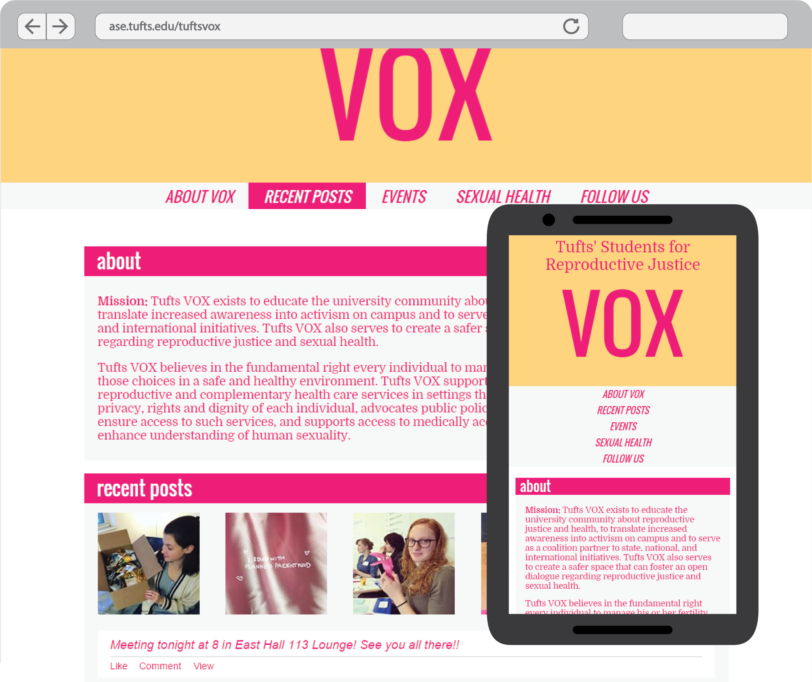

"Tufts VOX exists to educate the university community about reproductive justice and health, to translate increased awareness into activism on campus and to serve as a coalition partner to state, national, and international initiatives."
I am currently the webmaster for Tufts VOX. When redesigning the site the primary goals were to make the information accesible and to connect their social media with the website.
I used Facebook's graph API to display recent facebook posts along with upcoming events and photos of past events. I also used a javascript library for Instagram to display the most recent Instagram photos. I chose to keep the rest of the site fairly simple, displaying the static content in a straighforward and easy to access manner.
I chose to write the website from scratch avoiding clunky plugins and frameworks. Instead I used native HTML, CSS and Javascript. Using a mobile first approach ensures that the site will be useable on all devices. Media queries to dynamically resize and reposition content for larger screens making the content more accesible when extra screen space is available.